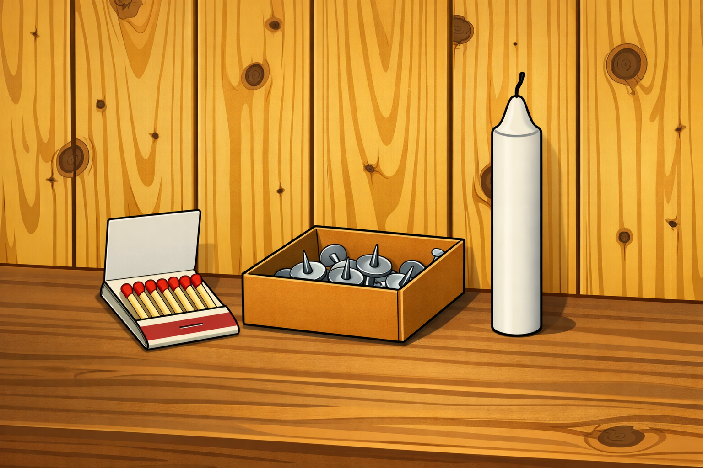
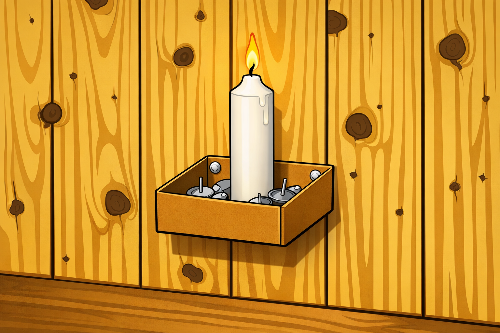

This interactive page uses the classic Candle Problem to illustrate
functional fixedness—our tendency to see objects
only in terms of their usual or most obvious function.
The Candle Problem
You are given three items:
A candle
A box of thumbtacks
A book of matches
Your task is to attach the candle to the wall so that it can be lit
and does not drip wax onto the table below.

Figure 1. Candle Problem (setup illustration).
Pause and think: How would you use these items to attach
the candle to the wall and prevent wax from dripping on the table?
Many people initially try to:
Press the candle directly into the wall with tacks. or
Melt wax and try to stick the candle to the wall.
These attempts often fail because of functional fixedness:
we see the box only as a container for tacks, not as a potential platform.
The Solution and Functional Fixedness

Figure 2. Candle Problem – modern color solution illustration.
The elegant solution is to:
Empty the thumbtacks out of the box.
Tack the empty box to the wall as a small shelf.
Place the candle upright in the box and light it.
The box now serves as a platform that holds the candle and catches
the dripping wax, satisfying the problem constraints.
What is Functional Fixedness?
Functional fixedness is a cognitive bias where we
struggle to see alternative uses for familiar objects beyond their typical function.
In this problem, many people treat the box only as a container for tacks, not as a
separate object that can be mounted and repurposed.
Key takeaway: Overcoming functional fixedness often requires
reframing the problem and asking, “What else could this object be used for,
if I ignore its usual role?”
Why This Matters
Problem solving: Creative solutions often emerge when we
question default assumptions about how things “should” be used.
Innovation: Many inventions come from repurposing existing
tools or materials in unexpected ways.
Learning and design: Being aware of functional fixedness helps
us design tasks, tools, and environments that encourage flexible thinking.